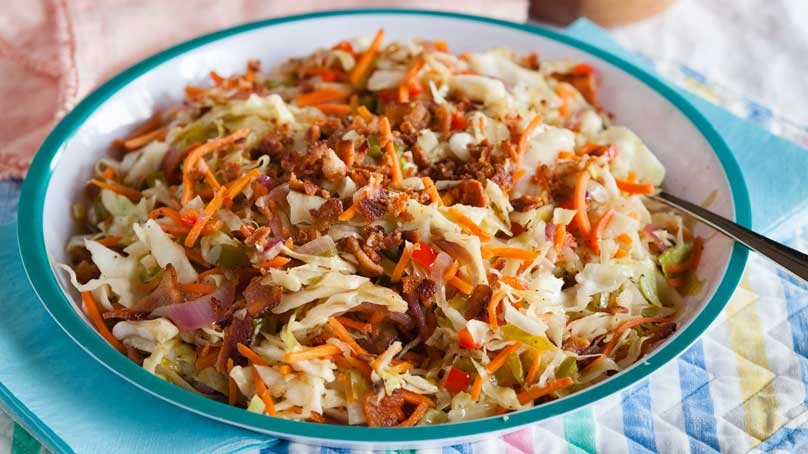

Hot Slaw

Description:
My goto recipe to get alot of fiber and vegetables,
without sacrificing on flavor.
Ingredients
- Bag of mixed and chopped Cabbage and carrots
- Salt
- Gochujuang paste
- Soy Sauce
Steps:
- Get a non-stick pan, heat to very high
- Add butter, wait for it to fully melt and heat to just before browning
- Add egg, then quickly baste the egg with the butter, until top is cooked
- Wait for a semi-dark crispy edge to form, remove from pan onto plate with paper towel